Start with the
right questions.
What lies beneath? What can the data tell us? Every useful subsurface workflow starts with a geological question.
Look at the evidence
Turn subsurface complexity into clarity.
AI-powered solutions. Geoscience at the core.
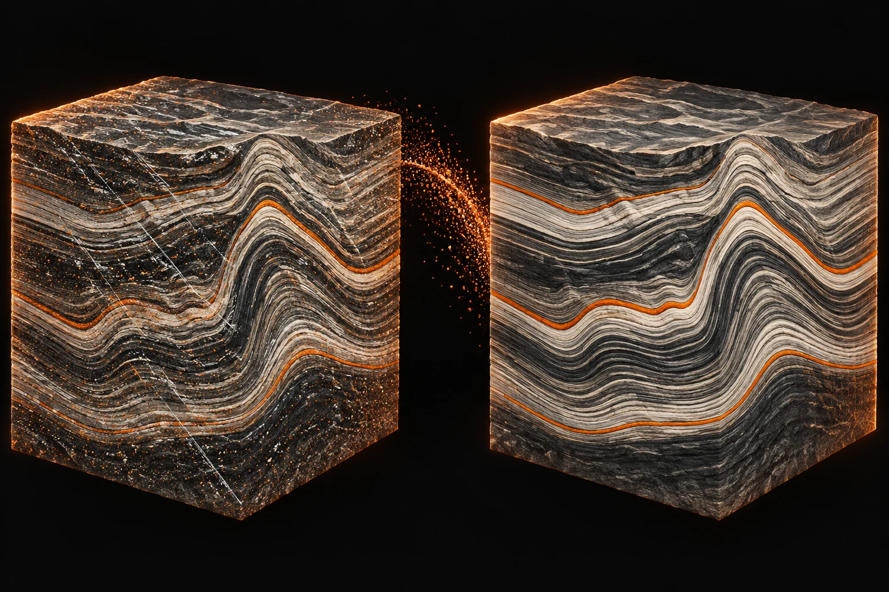
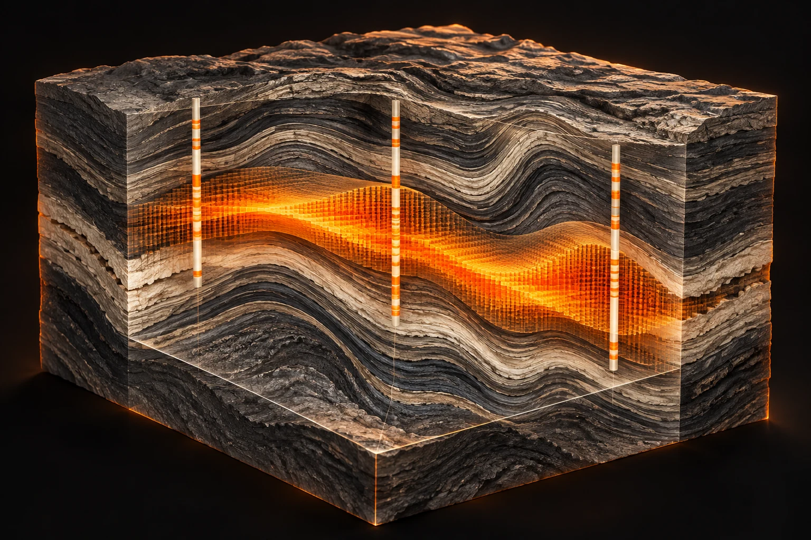
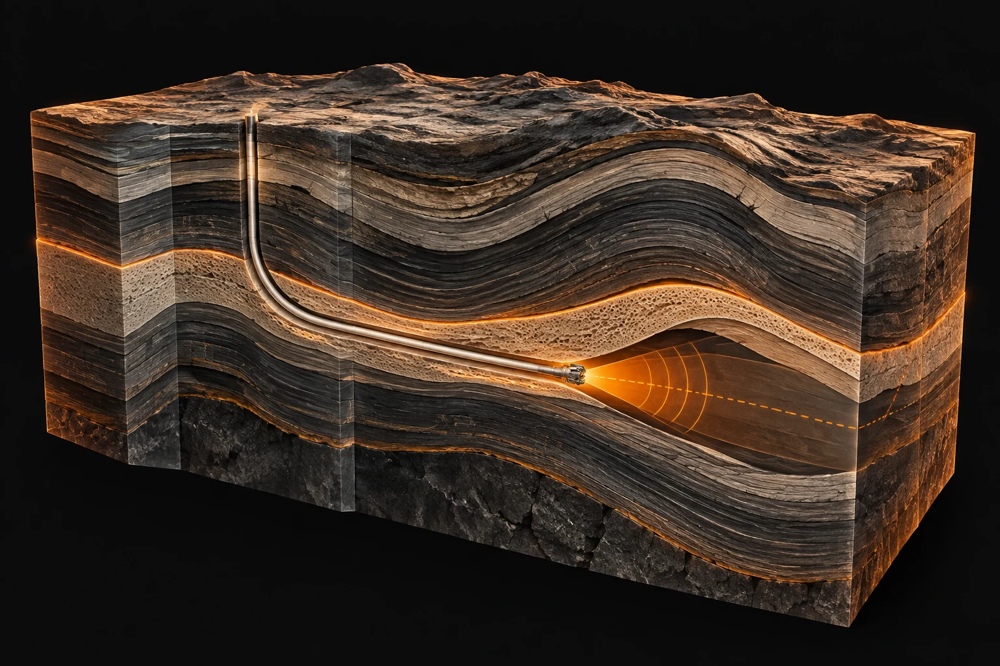
Explore original examples published by Waverity. Drag the divider and see the difference for yourself.
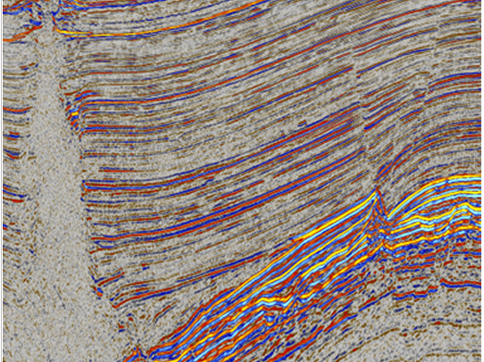
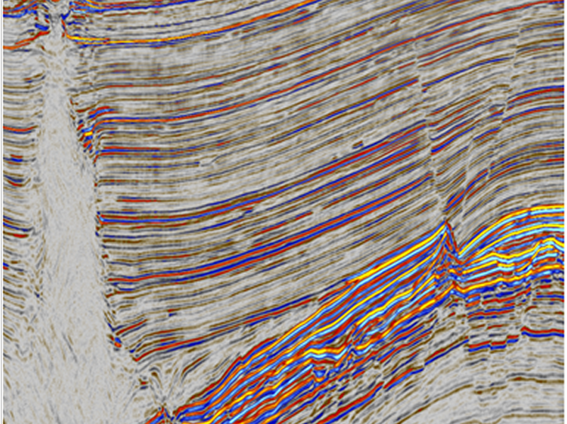
ENHANCEDORIGINALPublished product examples. The comparison displays existing images; it does not process new data in your browser.
From a clearer seismic image to insight ahead of the drill bit. Find the intelligence your next decision needs.
Deep learning for seismic noise attenuation. Reveal the detail that matters.
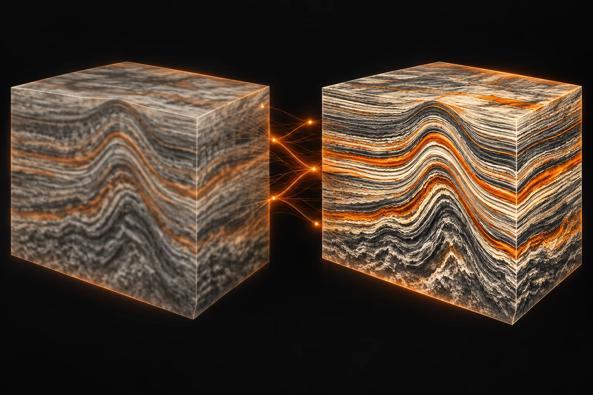
Enhance seismic image quality for a clearer view of geological structure.
Machine learning connects seismic and well information to predict reservoir properties.
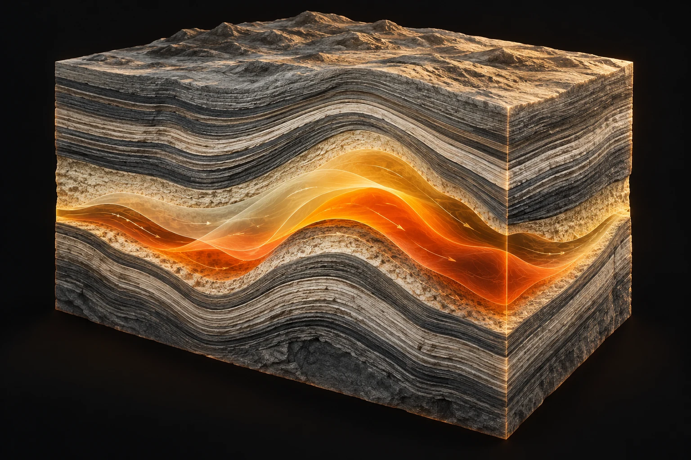
Explore pressure and fluid saturation changes through time-lapse seismic inversion.
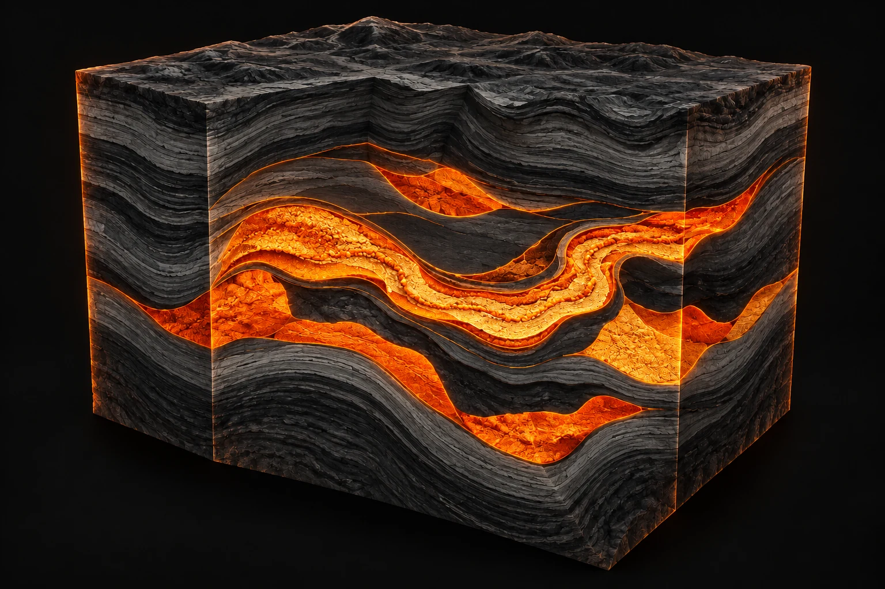
AI-powered interpretation brings seismic and well analysis into your workflow.
Predictive logging offers geological insight into what comes next.
Follow a subsurface decision from the first seismic image to the next interval ahead of the drill bit.
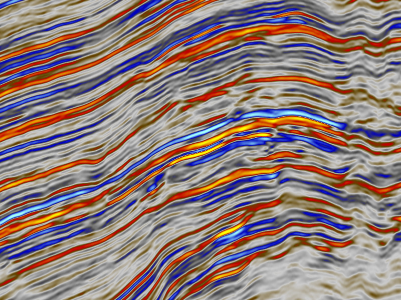
Conceptual workflow · not a measured depth section
What lies beneath? What can the data tell us? Every useful subsurface workflow starts with a geological question.
Look at the evidenceSINA attenuates noise. SIQE enhances image quality. A clearer starting point helps interpreters follow the geological story.
Log Cube extends well information across a field. MOTIVO organizes interpretation, while 4D Inversion explores changes over time.
PLWD brings predictive geological insight ahead of the drill bit, helping teams explore what may come next.
Rotate the cube, move the slice, and toggle interpretation guides to explore a volume from different perspectives.
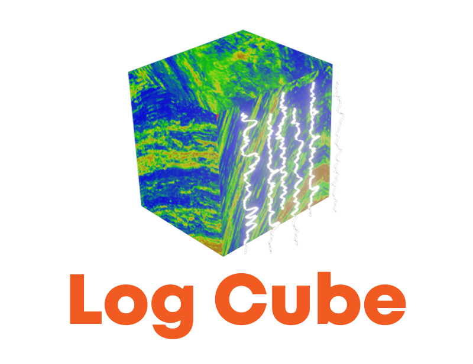
Preparing the interactive volume…
Better technology starts with understanding the science. We bring AI and subsurface expertise together, working alongside your team to solve real challenges.
Get to know our teamDomain knowledge shapes the questions we ask and the solutions we build.
Practical tools designed with geoscientists, tested against real subsurface challenges.
Understand the result, explore the evidence, and move your next decision forward.
Bring your subsurface challenge.
Let’s explore what’s possible together.